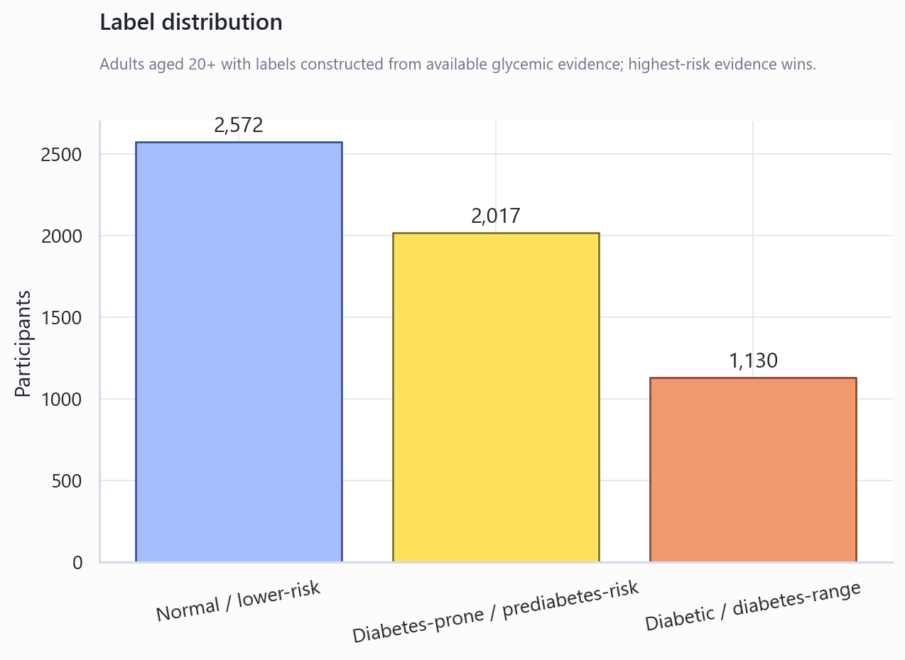
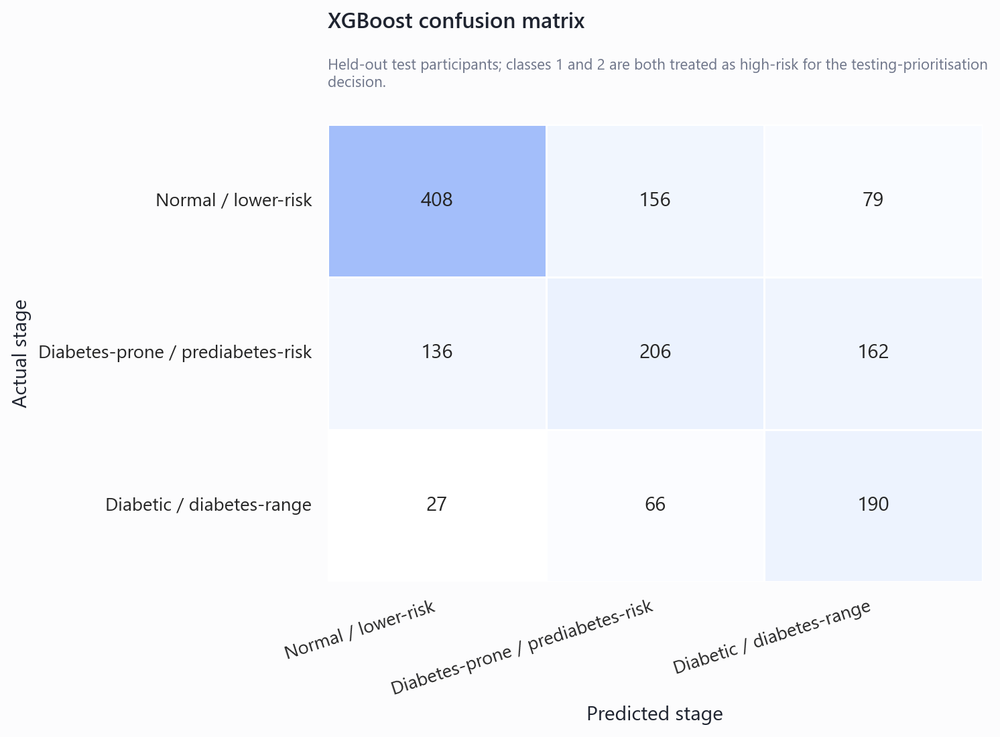
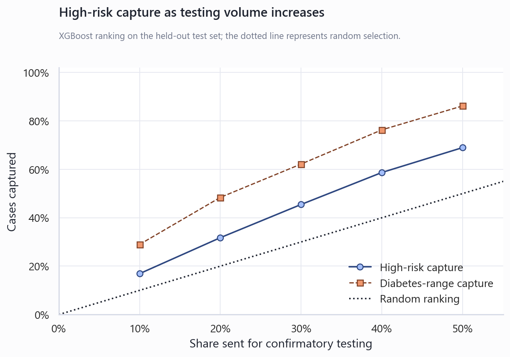
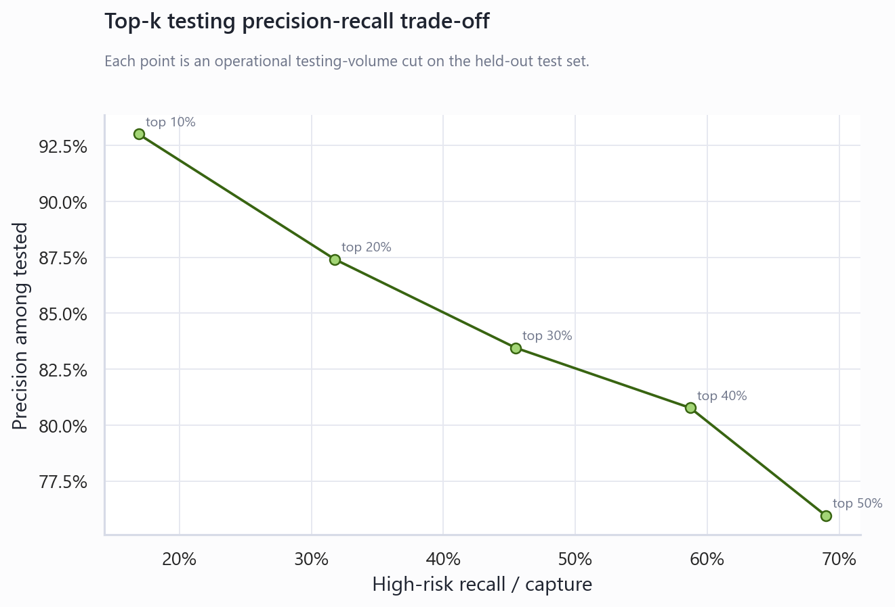
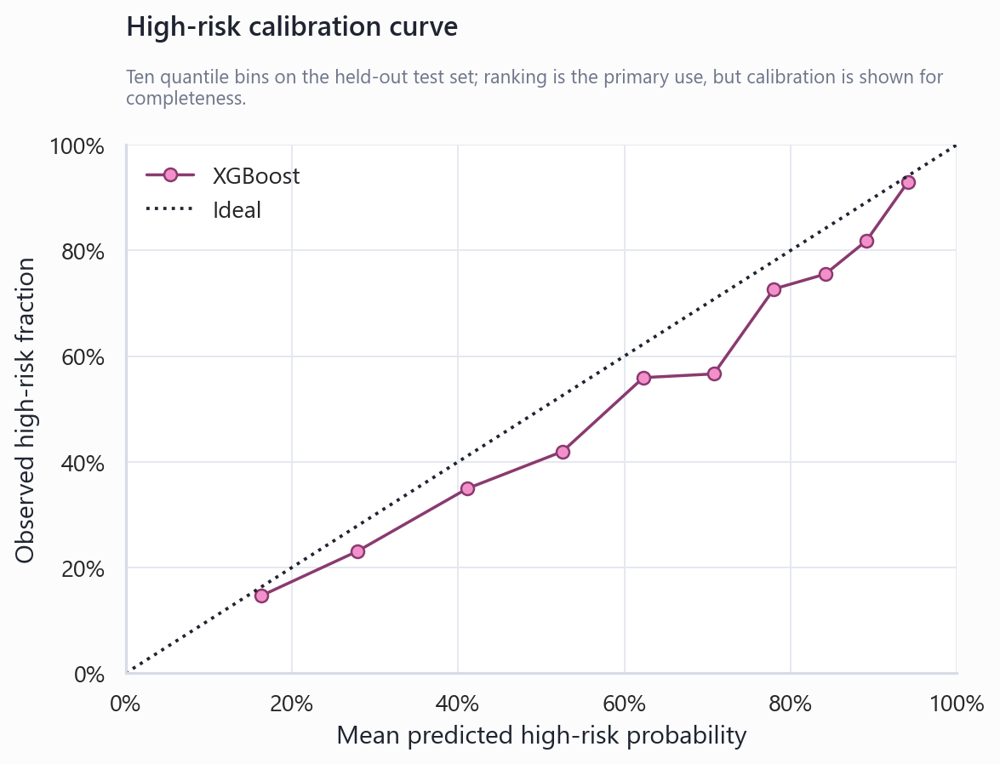

NHANES Pilot Verdict
Technical summary
Decision: NO-GO — fall back to BRFSS.
This pilot tested whether quickly collectable, non-glycemic Tier-1 indicators can rank adults for confirmatory HbA1c, fasting-glucose or OGTT testing. It does not diagnose diabetes. Glycemic variables and self-reported diabetes status were used only to construct the ground-truth stage.
Recommendation: NHANES Tier-1 pre-test prioritisation did not create enough incremental value. Recommended fallback: retain BRFSS as the official project and polish feature engineering, threshold tuning and reporting.
Dataset files used
| component | filename | status | source_url |
|---|---|---|---|
| demographics | DEMO_I.XPT | available | https://wwwn.cdc.gov/Nchs/Data/Nhanes/Public/2015/DataFiles/DEMO_I.XPT |
| diabetes_questionnaire | DIQ_I.XPT | available | https://wwwn.cdc.gov/Nchs/Data/Nhanes/Public/2015/DataFiles/DIQ_I.XPT |
| body_measures | BMX_I.XPT | available | https://wwwn.cdc.gov/Nchs/Data/Nhanes/Public/2015/DataFiles/BMX_I.XPT |
| blood_pressure_exam | BPX_I.XPT | available | https://wwwn.cdc.gov/Nchs/Data/Nhanes/Public/2015/DataFiles/BPX_I.XPT |
| blood_pressure_questionnaire | BPQ_I.XPT | available | https://wwwn.cdc.gov/Nchs/Data/Nhanes/Public/2015/DataFiles/BPQ_I.XPT |
| medical_conditions | MCQ_I.XPT | available | https://wwwn.cdc.gov/Nchs/Data/Nhanes/Public/2015/DataFiles/MCQ_I.XPT |
| physical_activity | PAQ_I.XPT | available | https://wwwn.cdc.gov/Nchs/Data/Nhanes/Public/2015/DataFiles/PAQ_I.XPT |
| smoking | SMQ_I.XPT | available | https://wwwn.cdc.gov/Nchs/Data/Nhanes/Public/2015/DataFiles/SMQ_I.XPT |
| alcohol | ALQ_I.XPT | available | https://wwwn.cdc.gov/Nchs/Data/Nhanes/Public/2015/DataFiles/ALQ_I.XPT |
| diet | DBQ_I.XPT | available | https://wwwn.cdc.gov/Nchs/Data/Nhanes/Public/2015/DataFiles/DBQ_I.XPT |
| health_insurance | HIQ_I.XPT | available | https://wwwn.cdc.gov/Nchs/Data/Nhanes/Public/2015/DataFiles/HIQ_I.XPT |
| income | INQ_I.XPT | available | https://wwwn.cdc.gov/Nchs/Data/Nhanes/Public/2015/DataFiles/INQ_I.XPT |
| glycohemoglobin | GHB_I.XPT | available | https://wwwn.cdc.gov/Nchs/Data/Nhanes/Public/2015/DataFiles/GHB_I.XPT |
| fasting_glucose | GLU_I.XPT | available | https://wwwn.cdc.gov/Nchs/Data/Nhanes/Public/2015/DataFiles/GLU_I.XPT |
| ogtt | OGTT_I.XPT | available | https://wwwn.cdc.gov/Nchs/Data/Nhanes/Public/2015/DataFiles/OGTT_I.XPT |
The analytical cohort contains 5,719 adults aged 20 years or older after the one-row-per-participant merge and age restriction. NHANES complex survey weights were not used for model fitting; results describe this feasibility sample, not population prevalence.
Target construction and label distribution
When label markers disagreed, the highest-risk class was assigned.
| label_source | nhanes_variable | available | class_1_rule | class_2_rule |
|---|---|---|---|---|
| self-reported doctor-diagnosed/borderline diabetes | DIQ010 | True | DIQ010 == 3 (borderline) | DIQ010 == 1 (doctor diagnosed) |
| self-reported prediabetes | DIQ160 | True | DIQ160 == 1 (ever told prediabetes) | not used for class 2 |
| HbA1c | LBXGH | True | 5.7 <= LBXGH <= 6.4 | LBXGH >= 6.5 |
| fasting plasma glucose | LBXGLU | True | 100 <= LBXGLU <= 125 mg/dL | LBXGLU >= 126 mg/dL |
| 2-hour OGTT glucose | LBXGLT | True | 140 <= LBXGLT <= 199 mg/dL | LBXGLT >= 200 mg/dL |
| class | count | class_name | percentage |
|---|---|---|---|
| 0 | 2572 | Normal / lower-risk | 0.450 |
| 1 | 2017 | Diabetes-prone / prediabetes-risk | 0.353 |
| 2 | 1130 | Diabetic / diabetes-range | 0.198 |

Tier-1 features used
The main model used 65 available non-glycemic features. Missing candidates were skipped rather than forced.
| feature | source_group | type | missing_pct |
|---|---|---|---|
| RIDAGEYR | demographics | numeric | 0.000 |
| RIAGENDR | demographics | categorical | 0.000 |
| RIDRETH3 | demographics | categorical | 0.000 |
| DMDEDUC2 | demographics | categorical | 0.000 |
| INDFMPIR | demographics | numeric | 0.111 |
| HIQ011 | demographics | categorical | 0.000 |
| BMXHT | anthropometrics | numeric | 0.053 |
| BMXWT | anthropometrics | numeric | 0.054 |
| BMXBMI | anthropometrics | numeric | 0.055 |
| BMXWAIST | anthropometrics | numeric | 0.105 |
| BPXSY1 | vitals | numeric | 0.099 |
| BPXSY2 | vitals | numeric | 0.077 |
| BPXSY3 | vitals | numeric | 0.081 |
| BPXSY4 | vitals | numeric | 0.958 |
| BPXDI1 | vitals | numeric | 0.099 |
| BPXDI2 | vitals | numeric | 0.077 |
| BPXDI3 | vitals | numeric | 0.081 |
| BPXDI4 | vitals | numeric | 0.958 |
| BPXPLS | vitals | numeric | 0.069 |
| BPQ020 | medical_history | categorical | 0.000 |
| BPQ080 | medical_history | categorical | 0.000 |
| BPQ040A | medical_history | categorical | 0.638 |
| BPQ090D | medical_history | categorical | 0.225 |
| MCQ160B | medical_history | categorical | 0.000 |
| MCQ160C | medical_history | categorical | 0.000 |
| MCQ160D | medical_history | categorical | 0.000 |
| MCQ160E | medical_history | categorical | 0.000 |
| MCQ160F | medical_history | categorical | 0.000 |
| SMQ020 | lifestyle | categorical | 0.000 |
| SMQ040 | lifestyle | categorical | 0.583 |
| PAQ605 | lifestyle | categorical | 0.000 |
| PAQ620 | lifestyle | categorical | 0.000 |
| PAQ650 | lifestyle | categorical | 0.000 |
| PAQ665 | lifestyle | categorical | 0.000 |
| PAD680 | lifestyle | numeric | 0.002 |
| ALQ101 | lifestyle | categorical | 0.133 |
| ALQ130 | lifestyle | numeric | 0.430 |
| ALQ141Q | lifestyle | numeric | 0.430 |
| ALQ141U | lifestyle | numeric | 0.776 |
| DBQ700 | lifestyle | categorical | 0.000 |
| DBD895 | lifestyle | numeric | 0.000 |
| DBD900 | lifestyle | numeric | 0.237 |
| DBD905 | lifestyle | numeric | 0.002 |
| DBD910 | lifestyle | numeric | 0.001 |
| INQ020 | socioeconomic_access | categorical | 0.035 |
| INQ012 | socioeconomic_access | categorical | 0.035 |
| bmi_category | engineered | categorical | 0.055 |
| waist_to_height_ratio | engineered | numeric | 0.106 |
| central_obesity_flag | engineered | numeric | 0.105 |
| age_band | engineered | categorical | 0.000 |
| bmi_x_age | engineered | numeric | 0.055 |
| bmi_x_waist | engineered | numeric | 0.107 |
| avg_systolic_bp | engineered | numeric | 0.071 |
| avg_diastolic_bp | engineered | numeric | 0.071 |
| pulse_pressure | engineered | numeric | 0.071 |
| mean_arterial_pressure | engineered | numeric | 0.071 |
| hypertension_flag | engineered | numeric | 0.000 |
| smoker_flag | engineered | numeric | 0.000 |
| physical_inactivity_flag | engineered | numeric | 0.000 |
| heavy_alcohol_flag | engineered | numeric | 0.430 |
| cholesterol_history_flag | engineered | numeric | 0.000 |
| cardiovascular_history_flag | engineered | numeric | 0.000 |
| cardiometabolic_history_count | engineered | numeric | 0.000 |
| low_income_access_risk_flag | engineered | numeric | 0.000 |
| insurance_gap_flag | engineered | numeric | 0.000 |
No clean, generally administered gestational-diabetes or PCOS history variable was identified in the selected 2015–2016 components, so no female-specific feature was forced into the model.
Features excluded due to leakage
| variable_or_family | treatment |
|---|---|
| DIQ010 | Used only to construct the label |
| DIQ160 | Self-reported prediabetes; used only to construct the label |
| DIQ170 / DIQ172 | Diabetes-risk awareness/perception; excluded to avoid leakage |
| LBXGH | HbA1c; used only to construct the label |
| LBXGLU / LBDGLUSI | Fasting glucose and derivative; label-only/excluded |
| LBXGLT / LBDGLTSI | 2-hour OGTT glucose and derivative; label-only/excluded |
| HOMA-IR / TyG / glucose-derived features | Not constructed |
Model comparison
| model | macro_f1 | class_0_recall | class_1_recall | class_2_recall | high_risk_recall | high_risk_precision | high_risk_pr_auc | high_risk_roc_auc | high_risk_brier_score |
|---|---|---|---|---|---|---|---|---|---|
| XGBoost | 0.549 | 0.635 | 0.409 | 0.671 | 0.793 | 0.726 | 0.812 | 0.788 | 0.191 |
| Logistic Regression | 0.546 | 0.641 | 0.399 | 0.668 | 0.785 | 0.728 | 0.807 | 0.785 | 0.194 |
| Simple Rule Score | 0.447 | 0.673 | 0.177 | 0.625 | 0.687 | 0.720 | 0.755 | 0.753 | 0.206 |

The business decision is based primarily on high-risk ranking quality and top-k capture, not on three-class accuracy alone.
Top-k testing simulation
| model | testing_percentage | tested_n | testing_volume_reduction | high_risk_cases_captured | high_risk_capture_rate | diabetic_cases_captured | diabetic_capture_rate | diabetes_prone_cases_captured | diabetes_prone_capture_rate | number_needed_to_test | missed_high_risk_cases | precision_among_tested |
|---|---|---|---|---|---|---|---|---|---|---|---|---|
| XGBoost | 10.0% | 143 | 90.0% | 133 | 16.9% | 82 | 29.0% | 51 | 10.1% | 1.075 | 654 | 93.0% |
| XGBoost | 20.0% | 286 | 80.0% | 250 | 31.8% | 137 | 48.4% | 113 | 22.4% | 1.144 | 537 | 87.4% |
| XGBoost | 30.0% | 429 | 70.0% | 358 | 45.5% | 176 | 62.2% | 182 | 36.1% | 1.198 | 429 | 83.4% |
| XGBoost | 40.0% | 572 | 60.0% | 462 | 58.7% | 216 | 76.3% | 246 | 48.8% | 1.238 | 325 | 80.8% |
| XGBoost | 50.0% | 715 | 50.0% | 543 | 69.0% | 244 | 86.2% | 299 | 59.3% | 1.317 | 244 | 75.9% |


Testing required for target capture
| model | target_high_risk_recall | tested_n | minimum_testing_percentage | testing_volume_reduction | high_risk_cases_required |
|---|---|---|---|---|---|
| XGBoost | 70.0% | 731 | 51.1% | 48.9% | 551 |
| XGBoost | 80.0% | 871 | 60.9% | 39.1% | 630 |
| XGBoost | 90.0% | 1077 | 75.3% | 24.7% | 709 |

Acceptance criteria
Criterion C defines “materially beats” before inspecting results as at least +0.03 high-risk PR-AUC and +0.05 absolute high-risk capture at top 30% or top 40% versus the simple rule score.
| criterion | definition | observed | passed |
|---|---|---|---|
| A | Top 30% captures >=70% OR top 40% captures >=80% of high-risk cases | top30=45.5%; top40=58.7% | False |
| B | At 80% high-risk recall, testing volume is reduced by >=40% | testing=60.9%; reduction=39.1% | False |
| C | XGBoost exceeds rule score by >=0.03 PR-AUC and >=0.05 top-k capture | PR-AUC delta=+0.057; top30 delta=+2.2%; top40 delta=+3.2% | False |
Final recommendation
NHANES Tier-1 pre-test prioritisation did not create enough incremental value. Recommended fallback: retain BRFSS as the official project and polish feature engineering, threshold tuning and reporting.
Do not position this pilot as the replacement project. Keep the BRFSS work as the official project and retain this NHANES pilot as documented negative feasibility evidence.
Limitations and robustness notes
- This is a held-out feasibility result from one NHANES cycle, not external validation.
- NHANES is a complex survey; unweighted predictive evaluation does not estimate US prevalence.
- Some fasting/OGTT labels are structurally missing because those tests apply to examination subsamples.
- Class 0 means no available criterion met the class 1 or class 2 thresholds; it does not prove absence of dysglycemia.
- Operational value depends on local prevalence, testing costs, capacity and acceptable miss rates.